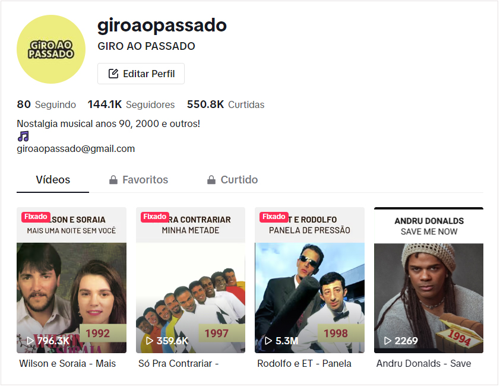

Uma pessoa com foco e disposição para se reinventar sempre que necessário.
Durante minha jornada, trabalhei principalmente como Designer Gráfico e Web Designer e atualmente procuro focar na área de UX/UI Design.
Parece papo furado mas é verdade: Organização é minha vida e sugerir melhorias é minha motivação.
"Quando a autora best-seller Iyanla Vanzant contratou a Graphic Girlz para seu novo site, não tínhamos ideia de que ela estaria aparecendo no The Oprah Winfrey Show. [...] Eu sabia que tinha que selecionar minha equipe de produção com cuidado e Jaqueline Mariano estava no topo da minha lista. "
(Julia Stege via LinkedIn) - Ler completo
"Atenciosa, criativa, tem bom gosto e domina muito bem os princípios do design gráfico.
[...] Com Jaqueline houve uma sintonia muito boa, logo no segundo projeto ela já sabia muito bem o que eu queria."
(Silvana Grappi via WeLancer) - Ler completo
Na vida, eu sou uma pessoa introvertida, mas quando é preciso encarar algumas coisas, tento sair da zona de conforto. Abaixo, três eventos que foram marcantes e que me fizeram ultrapassar a barreira da introversão:
1) Fui chamada ao palco para participar de uma atração de Halloween no parque Universal Orlando Resort, Flórida.
2) Entrevistei a cantora Joss Stone para meu extinto fansite.
3) Participei de uma live com o Bruno Ávila sobre "Os 13 pecados capitais no design web". Eu era aluna do curso 'Design Web 2' e ele convidou os alunos que tiveram os melhores trabalhos. Sou a única mulher no vídeo.
Obs: O vídeo está sem som, não está mais no ar, e infelizmente, o único registro que tinha era esse e o arquivo ficou corrompido.
4) Este não tem a ver com introversão (porque não apareço), mas é só outra curiosidade: Tenho mais de 140 mil seguidores na minha conta Giro Ao Passado no Tik Tok.

 19 9 9377 9113
19 9 9377 9113